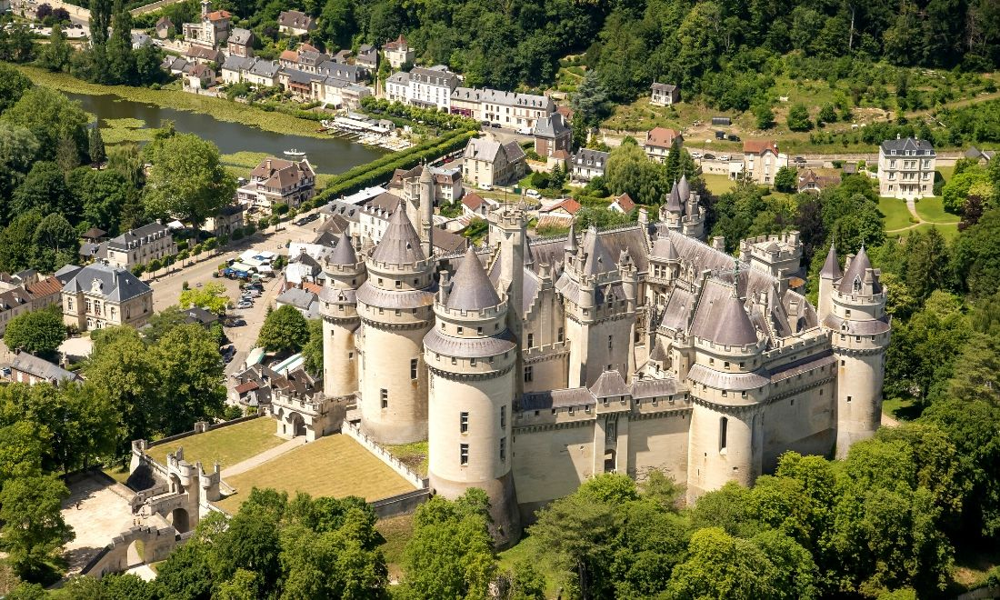
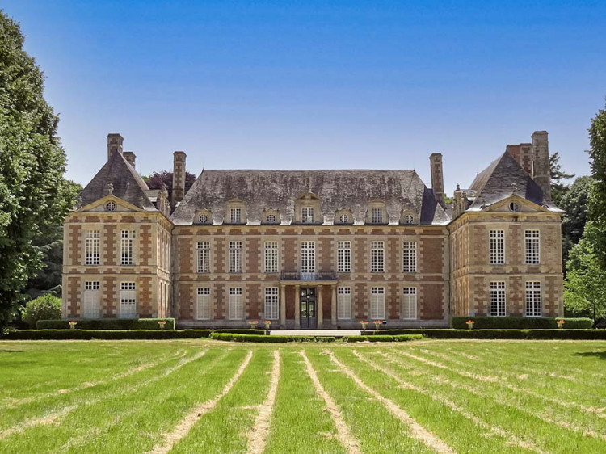
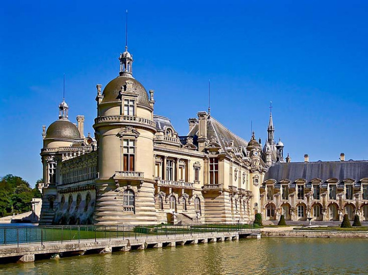
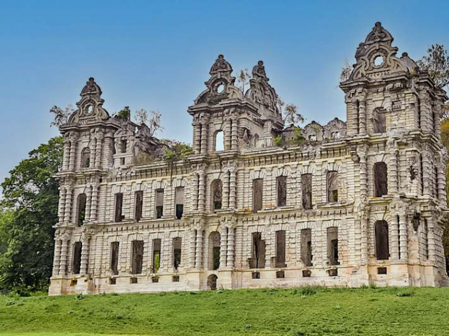

Domaine et écuries des Princes. Le Château de Chantilly, ses jardins et ses grandes écuries sont l'un des joyaux du patrimoine français.
Le département de l'Oise dans la région des Hauts-de-France possède de nombreux châteaux de toutes les époques, à travers ce séjour vous découvrirez leurs secrets.
Jour 1 : Le château de Chantilly. Le château de Chantilly est transformé en demeure de plaisance dans le style Renaissance par les Montmorency, puis devient un haut lieu de la Cour française sous Louis II de Bourbon, dit le Grand Condé.
Jour 2 : Le château de Pierrefonds. Imposant château-fort situé à la lisière de la forêt de Compiègne, Pierrefonds a toutes les caractéristiques d’un château défensif du Moyen Âge.
Jour 3 : Le château du Fayel. Le château de Fayel a été construit entre 1650 et 1655 pour Philippe de La Mothe Houdancourt, maréchal de France. Il y accueille Catherine de Suède, Louis XIV, Mazarin et même Anne d’Autriche.
Jour 4 : Château Mennechet à Chiry-Ourscamps. Édifice inachevé, le château Mennechet a été conçu comme une galerie richement sculptée sur ses façades et pignons extérieurs.
Prix : 247 €